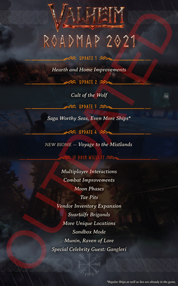

路线图
本站支持中英文站内搜索。带 ↗ 的链接指向外部网站；各页来源版本见页脚。


要了解目前正在开发的内容，请阅读未来内容页面！
以下更新已列入名单原始2021路线图：
家园与壁炉改进
家与灶聚焦房屋建造，增加家园活动，也增加食物配方和建筑部件。
狼之教派
狼之教派聚焦探索和战斗，并调整玩家遇敌。
值得传颂的海洋，更多船只
值得传颂的海洋，更多船只聚焦船只定制及海洋新增内容。
航向迷雾之地
航向迷雾之地将增加新生态区、敌人、物品、资源及首领等。
可能的更新
- 多人改进
- 战斗改进
- 月相
- 商人商品扩展
- 暗精灵强盗
- 更多独特地点
- 沙盒模式
- 雾尼，传授知识的渡鸦
- 特别名人嘉宾：甘格勒里
参考资料
| This page is a candidate for deletion Remember to check what links here and the page history before deletion. Reason: "Outdated, superseded by Future content" |
To check out what is currently being worked on, please read the future content page!
The following updates were listed on the original 2021 Roadmap:
Hearth and Home Improvements
Hearth And Home focused on house building, giving players more things to do around their Viking homes. This update also focused on food preparation with more recipes as well as building components.
Cult of The Wolf
Cult Of The Wolf is all about exploration and combat, as well as adjusting encounters against players.
Saga Worthy Seas, Even More Ships
Saga Worthy Seas, Even More Ships is based on ship customization and additions to the Ocean biome.
Voyage to the Mistlands
Voyage to the Mistlands will add a new biome with new enemies, items, resources and a new boss, plus more.
Potential Updates
- Multiplayer Improvements
- Combat Improvements
- Moon Phases
- Vendor Inventory Expansion
- Svartalfr Brigands
- More Unique Locations
- Sandbox Mode
- Munin, Raven of Lore
- Special Celebrity Guest: Gangleri